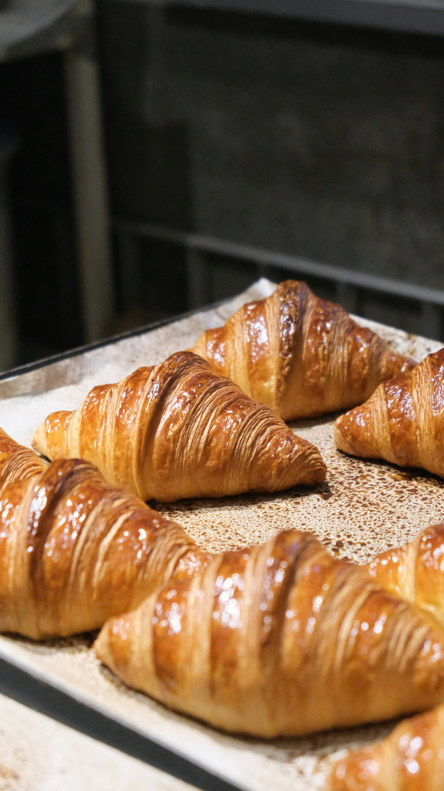

SHIN-SHIRAOKA · SINCE 2021.11.6
五つ星ホテルの職人が、
町のパン屋さんを
はじめました。A five-star hotel baker opened a neighborhood bakery.
都内の五つ星ホテルでベーカリーシェフを務めた職人が焼く、新白岡のパン屋です。クロワッサンやバゲットを目当てに、開店後は行列ができる日も。Bread from a baker who ran the bakery at a five-star hotel in Tokyo. Croissants and baguettes draw a queue on busy mornings.

BAKED TODAY
MOST MENTIONED
クチコミで名前が挙がるパンThe breads people keep mentioning
Googleマップのクチコミで、よく名前が出てくるパンです。タップすると右の「お買い物メモ」に追加できます。These come up most in Google Maps reviews. Tap one to add it to your shopping memo.
※ Googleマップのクチコミのキーワード件数（2026年9月時点）Counts of review keywords on Google Maps (Sept 2026).
BEFORE YOU GO
ご来店の前にGood to know
10:30オープン。閉店は17:00または18:00です。Opens. Closes at 17:00 or 18:00.
月・火Mon · Tue定休日（ほか不定休あり）。Closed, plus occasional days off.
現金のみCash onlyカード・電子マネーはご利用いただけません。Cards and e-money not accepted.
駐車場 5台5 parking spots混み合う時間は譲り合ってご利用ください。Please share them at busy times.
ACCESS
白岡市・新白岡Shin-Shiraoka, Shiraoka
- 住所Address
- 〒349-0212 埼玉県白岡市新白岡1-1-31-1-3 Shin-Shiraoka, Shiraoka, Saitama
- 営業Hours
- 10:30〜17:00 / 18:00（月・火定休、不定休あり）10:30–17:00/18:00 (closed Mon & Tue, plus some days)
- panshare0623@gmail.com
- @_panshare_
Googleマップ ★4.0（110件）Google Maps ★4.0 (110)